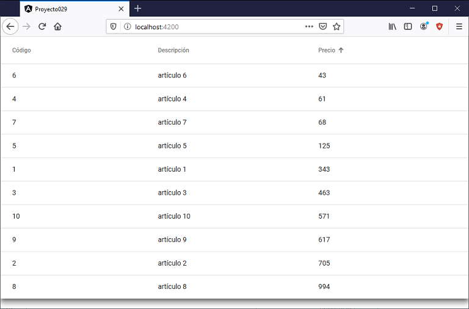

Vimos en conceptos anterior para mostrar datos en una tabla utilizamos la componente mat-table. Ahora veremos como permitir ordenar los datos por una determinada columna.
Mostrar un listado de artículos ficticios(codigo, descripción y precio), permitir mostrarlos en forma ordenada por cualquiera de los tres campos.
Crearemos primero el proyecto
ng new proyecto029
Procedemos a instalar todas las dependencias de Angular Material ayudados por Angular CLI mediante el comando 'add':
ng add @angular/material
Modificamos el archivo 'app.module.ts' donde debemos importar MatTableModule y MatSortModule:
import { BrowserModule } from '@angular/platform-browser';
import { NgModule } from '@angular/core';
import { AppComponent } from './app.component';
import { BrowserAnimationsModule } from '@angular/platform-browser/animations';
import { MatTableModule } from '@angular/material/table';
import { MatSortModule } from '@angular/material/sort';
@NgModule({
declarations: [
AppComponent
],
imports: [
BrowserModule,
BrowserAnimationsModule,
MatTableModule,
MatSortModule
],
providers: [],
bootstrap: [AppComponent]
})
export class AppModule { }
Modificamos el archivo 'app.component.ts' con la lógica de nuestra componente:
import { Component, ViewChild } from '@angular/core';
import { MatTableDataSource } from '@angular/material/table';
import {MatSort} from '@angular/material/sort';
@Component({
selector: 'app-root',
templateUrl: './app.component.html',
styleUrls: ['./app.component.css']
})
export class AppComponent {
columnas: string[] = ['codigo', 'descripcion', 'precio'];
datos: Articulo[] = [];
dataSource:any;
@ViewChild(MatSort, {static: true}) sort!: MatSort;
ngOnInit() {
for (let x = 1; x <= 10; x++)
this.datos.push(new Articulo(x, `artículo ${x}`, Math.trunc(Math.random() * 1000)));
this.dataSource = new MatTableDataSource<Articulo>(this.datos);
this.dataSource.sort = this.sort;
}
}
export class Articulo {
constructor(public codigo: number, public descripcion: string, public precio: number) {
}
}
En este archivo importamos las clases:
import { MatTableDataSource } from '@angular/material/table';
import {MatSort} from '@angular/material/sort';
En el método ngOnInit almacenamos en el arreglo de tipo Articulo 10 elementos aleatorios:
ngOnInit() {
for (let x = 1; x <= 10; x++)
this.datos.push(new Articulo(x, `artículo ${x}`, Math.trunc(Math.random() * 1000)));
También en este método inicializamos la propiedad dataSource con la referencia de un objeto MatTableDataSource a la que le pasamos como parámetro en el constructor el arreglo:
this.dataSource = new MatTableDataSource<Articulo>(this.datos);
Finalmente inicializamos la propiedad 'sort' del 'dataSource' con la referencia de la componente 'sort':
this.dataSource.sort = this.sort;
La clase 'Articulo' se la declaró después de la clase 'AppComponent':
export class Articulo {
constructor(public codigo: number, public descripcion: string, public precio: number) {
}
}
Codificamos la interfaz visual en el archivo 'app.component.html':
<div class="mat-elevation-z8">
<table mat-table [dataSource]="dataSource" class="mat-elevation-z8" matSort>
<ng-container matColumnDef="codigo">
<th mat-header-cell *matHeaderCellDef mat-sort-header> Código </th>
<td mat-cell *matCellDef="let articulo"> {{articulo.codigo}} </td>
</ng-container>
<ng-container matColumnDef="descripcion">
<th mat-header-cell *matHeaderCellDef mat-sort-header> Descripción </th>
<td mat-cell *matCellDef="let articulo"> {{articulo.descripcion}} </td>
</ng-container>
<ng-container matColumnDef="precio">
<th mat-header-cell *matHeaderCellDef mat-sort-header> Precio </th>
<td mat-cell *matCellDef="let articulo"> {{articulo.precio}} </td>
</ng-container>
<tr mat-header-row *matHeaderRowDef="columnas"></tr>
<tr mat-row *matRowDef="let row; columns: columnas;"></tr>
</table>
</div>
Cuando definimos la etiqueta 'table' especificamos el enlace de la propiedad '[dataSource]' con nuestro objeto 'dataSource' y disponemos 'matSort':
<table mat-table [dataSource]="dataSource" class="mat-elevation-z8" matSort>
Para las columnas definimos etiquetas 'ng-container' iniciando la propiedad 'matColumnDef' con alguna de las componentes del atributo 'columnas', también creamos el título de la columna como su contenido, lo nuevo es agregar 'mat-sort-header' si queremos que dicha columna se pueda ordenar:
<ng-container matColumnDef="codigo">
<th mat-header-cell *matHeaderCellDef mat-sort-header> Código </th>
<td mat-cell *matCellDef="let articulo"> {{articulo.codigo}} </td>
</ng-container>
<ng-container matColumnDef="descripcion">
<th mat-header-cell *matHeaderCellDef mat-sort-header> Descripción </th>
<td mat-cell *matCellDef="let articulo"> {{articulo.descripcion}} </td>
</ng-container>
<ng-container matColumnDef="precio">
<th mat-header-cell *matHeaderCellDef mat-sort-header> Precio </th>
<td mat-cell *matCellDef="let articulo"> {{articulo.precio}} </td>
</ng-container>
la hoja de estilo de la componente 'app.component.css':
table {
width: 100%;
}
Si ejecutamos la aplicación tenemos como resultado:
Podemos probar esta aplicación en la web aquí.